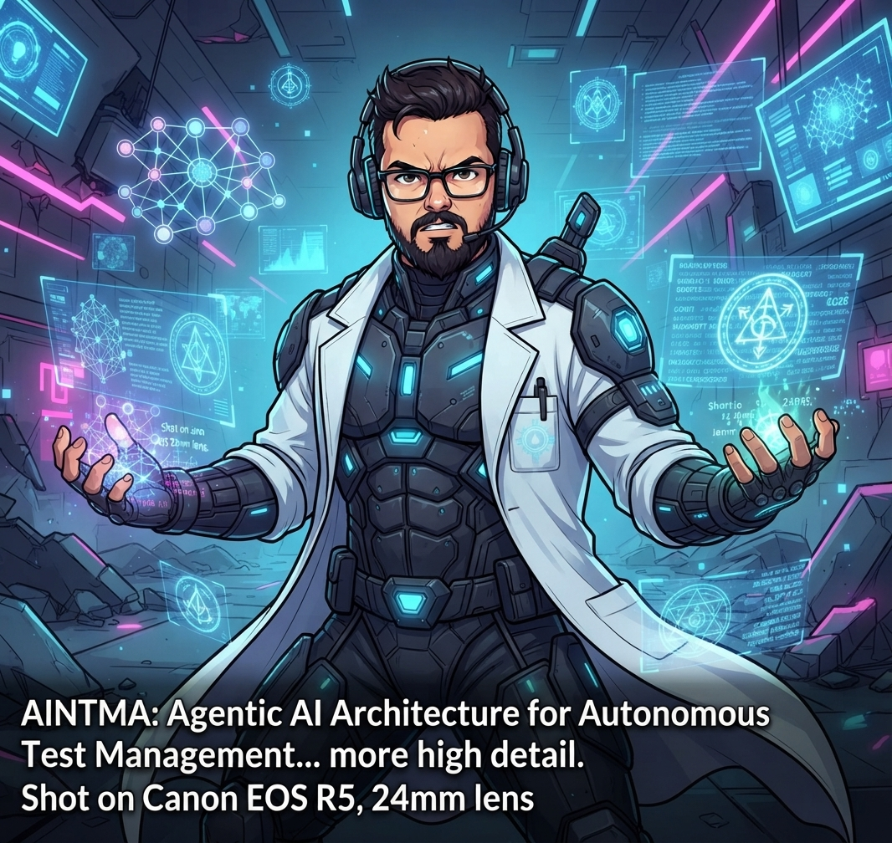

Último Post
AINTMA: A Revolução da Arquitetura Agêntica na Gestão Autônoma de Testes de Software
O desenvolvimento de software atingiu um patamar de complexidade onde a intervenção humana em cada etapa do ciclo de vida, especialmente nos testes, tornouse um gargalo crítico. Até 2026, com...